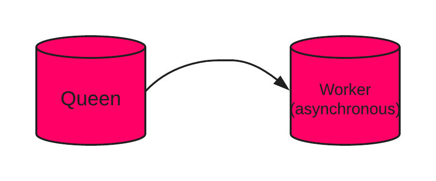
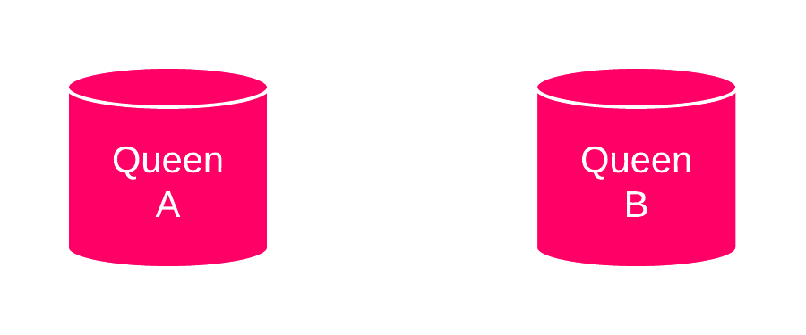
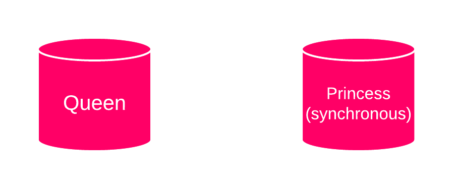
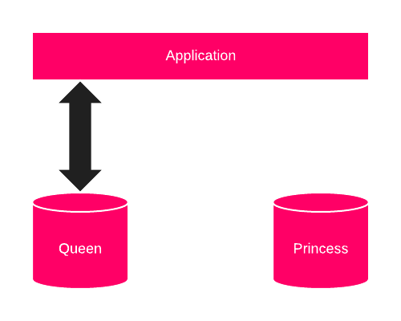
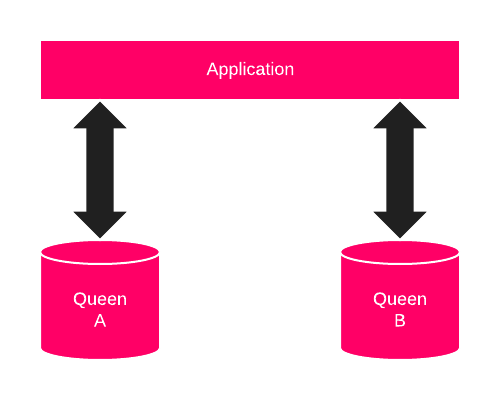
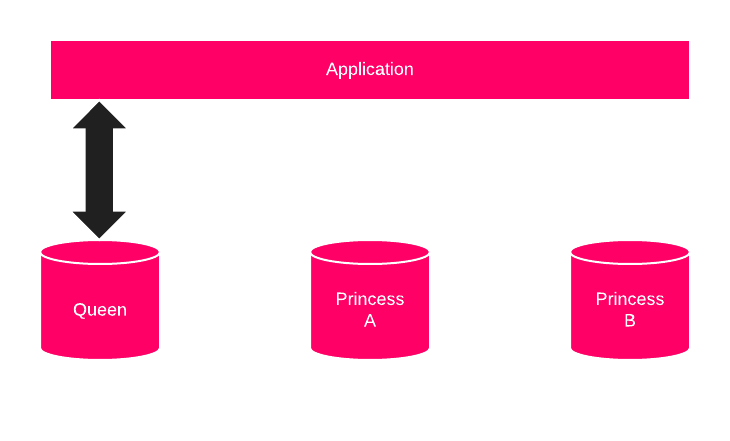

Chasing unicorns!
0 dataloss and 99.999% availability
Paris Open Source Summit
2019-12-11
Chasing unicorns
- About dataloss and downtime
- CAP and
PACELC theorem
- Some typical architectures
0 dataloss
- Does not
exist
- Sorry
:-)
- Different meanings
Allowed failure time
| Availability needed |
daily |
weekly |
yearly |
| 100% |
0 |
0 |
0 |
| 99.999% |
<0.9s |
6s |
<5.5min |
| 99.99% |
<9s |
1min |
2d |
| 2 hours by night |
2h |
14h |
30d |
| "day" only |
12h |
3,5d |
>180d |
CAP theorem
When designing distributed web services, there are
three properties that are commonly desired:
consisteny, availability, and partition tolerance. It is impossible
to achieve all three.
Consistency
Each node will see the last (committed) version of the
data.
Availability
The system will always answers something different than
an error message.
Network partitioning
The network will be allowed to lose arbitrarily many
messages sent from one node to another without altering
the system answers.
CAP theorem
-
impossibility to have all 3
- you can
secure 2
- then stretch to the third
PACELC theorem
In case of network partitioning (P) in a distributed
computer system, one has to choose between availability
(A) and consistency (C),
but else (E), even when the system is running normally
in the absence of partitions, one has to choose between
latency (L) and consistency (C).
Latency
Latency is the amount of time the system needs to
answer when it's smaller than a request timeout.
RDBMS are CA
⟶ True and False
RDBMS in single node
configuration are CA
RDBMS with asynchronous streaming
replication are AP
RDBMS with synchronous streaming
replication are AP
- No network...
- ... No network partitioning !
➠ CA

- Latency between queen and worker
- No read consistency
➠ AP

- Latency between queen A and queen B
- No read consistency
➠ AP

- Princess acknowledges each commit
- If princess fails, no writes on Queen
➠ CP
Blueprints
- PostgreSQL
- Minimal configuration
- Beware of the weakest link
Near 0 dataloss

- 1 queen
- 1 (synchronous) princess
- Don't forget (tested) backups
99.999% availability

- 1 queen A
- 1 queen B
- logical replication
Less availability, more data
consistency

- 1 queen
- quorum of princesses
- Database is NOT the single point of failure
- You're NOT Google
- Quantify your manageable dataloss
- Quantify your manageable downtime
Unicorns are more real than 0-dataloss and 99.999% availability.
Gülçin Yıldırım Jelínek, Prague, 2019-08-27